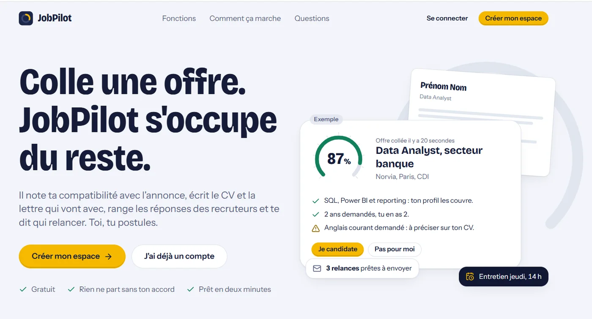
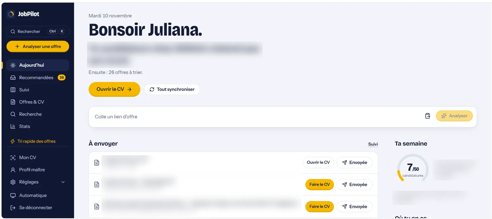
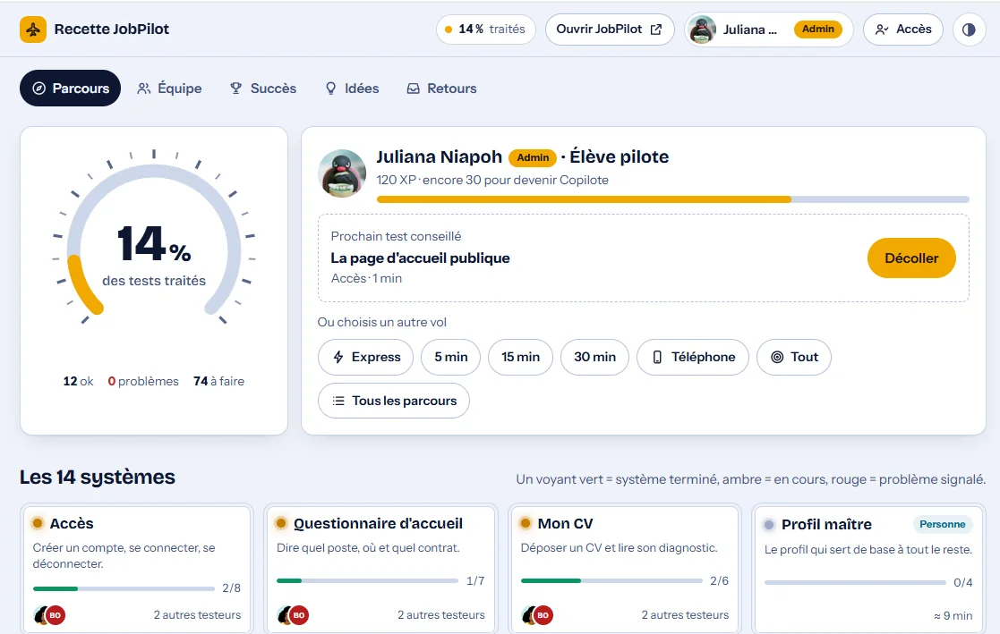
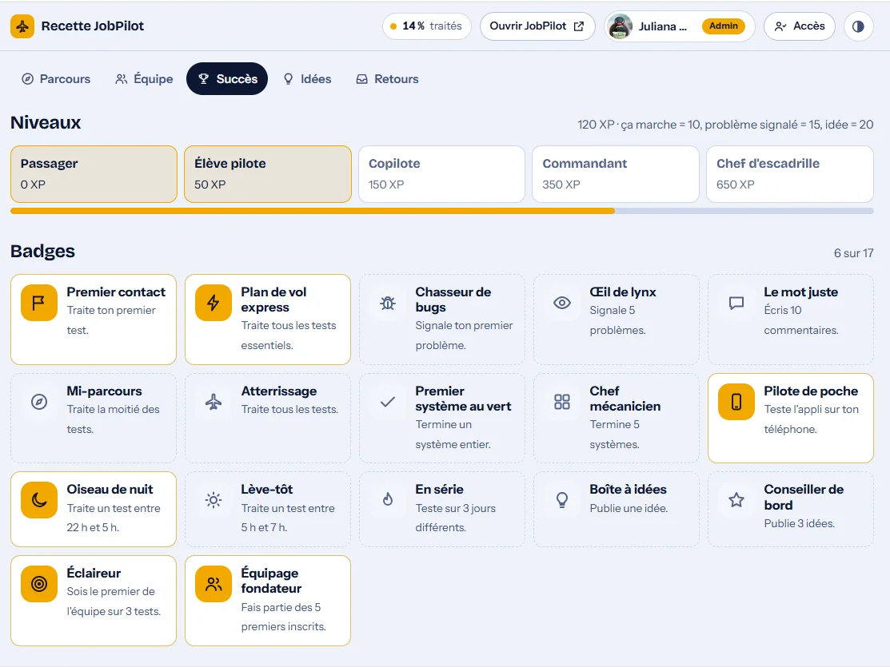
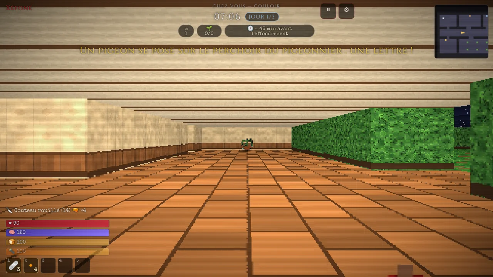
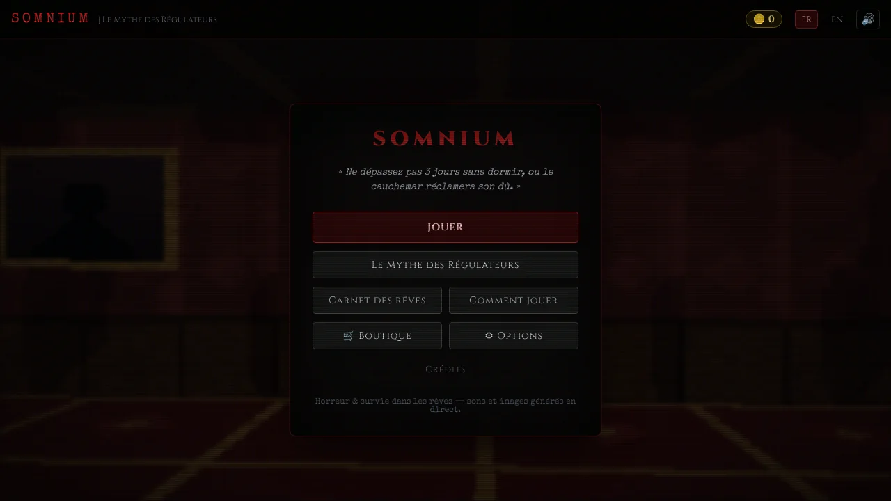

NouveauNov. 2026
JobPilot passe en refonte complète
Sécurité des comptes, nouveau parcours, page publique : l'application est repensée pour accueillir d'autres utilisateurs que moi.
Voir JobPilotDisponible immédiatement · CDI ou freelance · France entière
Data Analyst & Business Intelligence
Tableaux de bord Power BI, bases SQL, Python et applications web : des outils de données conçus pour être utilisés.
2 ans
d'alternance à la SNCF et chez ORANO
Master
Data Management, diplômée en décembre 2025
4
projets en ligne que vous pouvez ouvrir et essayer
Actualités
Sécurité des comptes, nouveau parcours, page publique : l'application est repensée pour accueillir d'autres utilisateurs que moi.
Voir JobPilotChaque version de JobPilot est testée avant sa mise en ligne : parcours par système, badges et retours des testeurs.
Voir la recetteMon jeu d'horreur et de survie, écrit en JavaScript, se joue directement dans le navigateur.
Jouer à SomniumÀ propos
Pendant deux ans d'alternance, chez ORANO puis à la SNCF, j'ai transformé des données de terrain en tableaux de bord, en indicateurs de qualité et en outils que les équipes ont adoptés.
Depuis, je construis mes propres produits pour mener un projet jusqu'au bout, de la base de données à la mise en ligne : JobPilot, une application de suivi de candidatures, et le cahier de recette qui la teste.
Je cherche un CDI d'analyste data ou BI, ou des missions en freelance.
Projets
Ils sont tous en ligne. Cliquez, essayez, jugez sur pièce.
2026 · Application web · Projet personnel
Colle une offre d'emploi : JobPilot la note, prépare le CV adapté et suit la candidature.


2026 · Qualité logicielle · Outil de test
L'outil avec lequel je teste JobPilot avant chaque mise en ligne.


2026 · Jeu vidéo · Projet créatif
Horreur et survie dans les rêves, jouable dans le navigateur.
Ce n'est pas un projet data. C'est la preuve que je mène un produit jusqu'à sa publication.


Mon mémoire, avec une démonstration interactive en ligne.
Données Excel restructurées en format long pour croiser les dépenses, puis mesures DAX pour les analyser par catégorie et par période.
Captures d'écran bientôt en ligne
Parcours
2024 – 2025
eSNCF · Saint-Denis
2022 – 2023
ORANO · Châtillon
2023 – 2025
Master Data Management
Diplômée en décembre 2025
2022 – 2023
Bachelor E-commerce
E-commerce et marketing numérique
2020 – 2022
DUT STID
Statistique et informatique décisionnelle
Compétences
Prestations
Micro-entrepreneur, SIRET actif. Je m'adapte à votre cadre : régie, forfait ou mission ponctuelle.
Modèle de données, mesures DAX et rapports pour piloter une activité.
Structuration, requêtes, nettoyage et contrôle de la qualité des données.
Outils sur mesure en Python, Streamlit ou web pour remplacer les tableurs fragiles.
Backlog, cahier des charges, coordination entre les métiers et les équipes techniques.
Contact
Un poste à pourvoir, une mission, une question : écrivez-moi, ou passez par le formulaire.